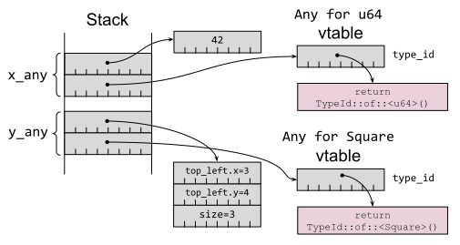

第 19 条：避免反射
从其他语言转向 Rust 的程序员通常习惯于将反射作为他们工具箱的一部分。他们会浪费大量时间尝试在 Rust 中实现基于反射的设计，结果他们会发现他们尝试做的事情即使能做成，也会很糟糕。本条希望通过描述 Rust 关于反射有的和没有的，以及可以用什么来代替，从而节省探索死胡同所浪费的时间。
反射是程序在运行时上检查自身的能力。给运行时丢一个数据，会有以下问题：
- 可以确定有关该数据的类型的哪些信息？
- 可以利用这些信息做什么？
具有完全反射支持的语言对这些问题有很多解答。具有反射的语言通常根据反射信息在运行时上支持以下或全部功能：
- 判断一个数据的类型
- 发掘其内容
- 更改其字段
- 调用其方法
具有这种程度的反射支持的语言也往往是动态类型语言（比如 Python, Ruby），但是还有一些出名的静态类型语言也支持反射，特别是 Java 和 Go。
Rust 不支持这种类型的反射，这使得避免反射的建议在这种层次上非常容易实现——但其实是不可能的。对于来自完整支持反射的语言的程序员来说，乍一看，反射的缺席似乎是一个重大差距，但 Rust 的其他功能提供了许多解决相同问题的替代方法。
C++ 有一种有限制的反射，称为运行时类型识别（run-time type identification, RTTI）。typeid 操作符为多态类型的对象（大概是：有虚函数的类），返回每个类型的独一无二的标识符。
typeid：可以通过基类引用来恢复对象的具体类dynamic_cast<T>：在安全且正确的情况下，允许将基类转换为派生类
Rust 也不支持这种 RTTI 风格的反射，延续了本条建议所遵循的主题。
Rust 确实支持一些在 std::any 模块中提供的类似功能特性，但它们功能受限（接下来将探索的）并且最好避免使用，除非没有其他代替方案。
std::any 中第一个类似反射的功能乍一看非常神奇——是一种确定数据类型名字的方法。以下示例使用了用户定义的 tname() 函数：
#![allow(unused)] fn main() { let x = 42u32; let y = vec![3, 4, 2]; println!("x: {} = {}", tname(&x), x); println!("y: {} = {:?}", tname(&y), y); }
输出在值的旁边显示类型：
x: u32 = 42
y: alloc::vec::Vec<i32> = [3, 4, 2]
tname() 的实现揭示了编译器的秘密：这是一个泛型函数（根据第 12 条），所以实际上每次调用都会生成一个不同的函数（tname::<u32> 或 tname::<Square>）：
#![allow(unused)] fn main() { fn tname<T: ?Sized>(_v: &T) -> &'static str { std::any::type_name::<T>() } }
函数的实现由 std::any::type_name<T> 库函数提供，也是泛型函数。该函数只能访问编译期信息；没有代码在运行时来确定类型。第 12 条中返回到 trait 对象的类型证实了这一点：
#![allow(unused)] fn main() { let square = Square::new(1, 2, 2); let draw: &dyn Draw = □ let shape: &dyn Shape = □ println!("square: {}", tname(&square)); println!("shape: {}", tname(&shape)); println!("draw: {}", tname(&draw)); }
只有 trait 对象的类型可用，而不是具体底层数据的类型（Square）：
square: reflection::Square
shape: &dyn reflection::Shape
draw: &dyn reflection::Draw
type_name 返回的字符串仅能用于诊断——它显然是一个“尽力了”的助手，其内容可能改变并且可能不唯一——所以不要尝试解析 type_name 的结果。如果你需要全局唯一的类型标识符，请使用 TypeId 代替：
#![allow(unused)] fn main() { use std::any::TypeId; fn type_id<T: 'static + ?Sized>(_v: &T) -> TypeId { TypeId::of::<T>() } }
#![allow(unused)] fn main() { println!("x has {:?}", type_id(&x)); println!("y has {:?}", type_id(&y)); }
x has TypeId { t: 18349839772473174998 }
y has TypeId { t: 2366424454607613595 }
输出对人类来说是不可读的，但唯一性确保结果可以在代码中使用。但是，通常最好不要直接用 TypeId，而是使用 std::any::Any trait 来替代，因为标准库有用于处理 Any 实例的附加方法（如下）。
Any trait 有一个方法 [type_id()]，对实现了该 trait 的类型返回一个 TypeId 值。不过，你不能自行实现该 trait，因为 Any 已经为大多数任意类型 T 提供了全面的实现：
#![allow(unused)] fn main() { impl<T: 'static + ?Sized> Any for T { fn type_id(&self) -> TypeId { TypeId::of::<T>() } } }
这种一揽子实现并未覆盖所有类型 T：T: 'static 生命周期约束意味着如果 T 包含任何具有非'static 生命周期的引用，那么 TypeId 就没有为 T 实现。这是有意的限制，因为生命周期并不完全属于该类型：TypdId::of::<&'a T> 与 TypeId::of::<&'b T> 虽然是相同的，但他俩生命周期不同，这增加了混淆和不安全代码的可能性（译者注：意思是 type_id() 对他俩只会返回相同的 TypeId，但是他俩生命周期是不同的，生命周期不是类型的一部分，判断他俩的 id 会导致混淆并且不安全，所以要加限制为 'static）。
回想一下第 8 条，trait 对象是一个胖指针，存储了指向底层具体数据的指针，以及指向该 trait 实现的虚表的指针。对于 Any，虚表只有一个入点，即用于返回项目类型的 type_id() 方法，如图 3-4 所示：
#![allow(unused)] fn main() { let x_any: Box<dyn Any> = Box::new(42u64); let y_any: Box<dyn Any> = Box::new(Square::new(3, 4, 3)); }

图 3-4. Any trait 对象，每个都有指向具体数据以及虚表的指针
除了一些间接寻址之外，一个 dyn Any trait 对象实际上就是一个裸指针和一个类型标识符的结合体。这意味着标准库可以为一个 dyn Any trait 对象提供一些附加的已定义的通用方法；这些方法对于某些附加类型 T 是通用的：
is::<T>()：指示了 trait 对象是否等于某个特定的其他类型Tdowncast_ref::<T>()：返回对具体类型T的引用，前提是 trait 对象的类型与T匹配downcast_mut::<T>()：返回对具体类型T的可变引用，前提是 trait 对象的类型与T匹配
你会发现 Any trait 只是近似反射的功能：语法选择了（在编译时）显式构建一些东西（&dyn Any）来跟踪该数据的编译时类型以及位置。仅当构建 Any trait 对象的开销已经发生时，（比如）向下转型回原始类型的能力才是可能的。
Rust 中很少有场景会在一个数据上关联不同的编译时类型和运行时类型。其中最主要的就是 trait objects：具体类型为 Square 的数据可以被强制转换为该类型实现的 trait 对象 dyn Shape。这种强制是从一个简单的指针（对象/数据）构建了一个胖指针（对象 + 虚表）。
回想第 12 条，Rust 的 trait 对象并不是真正面向对象的。Square 并不是一个 Shape；只是 Square 实现了 Shape 的接口。对于 trait 约束也是如此：一个 trait 约束 Shape: Draw 并不意味着 is-a；这只意味着也实现了，因为 Shape 的虚表包含了 Draw 的方法的入点。
对于一些简单的 trait 约束：
#![allow(unused)] fn main() { trait Draw: Debug { fn bounds(&self) -> Bounds; } trait Shape: Draw { fn render_in(&self, bounds: Bounds); fn render(&self) { self.render_in(overlap(SCREEN_BOUNDS, self.bounds())); } } }
等效的 trait 对象：
#![allow(unused)] fn main() { let square = Square::new(1, 2, 2); let draw: &dyn Draw = □ let shape: &dyn Shape = □ }
带有箭头的图片（如图 3-5；与第 12 条重复）使问题变得清晰明了；给定一个 dyn Shape 对象，没有直接的方法来构建 dyn Draw trait 对象，因为没有方法变回 impl Draw for Square 的虚表——即使其内容的相关部分（Square::bounds() 方法的地址）理论上是可以恢复的。（这可能在 Rust 的更高版本中发生变化；请参阅本条最后部分。）

图 3-5. 用于 trait 约束的 trait 对象，用于 Draw 和 Shape 的不同虚表
与上图对比，显然，显式构造的 &dyn Any trait 对象没有用处。Any 允许恢复底层数据的具体类型，但没有方法可以查看它实现了哪些 trait，或者访问可能允许创建的 trait 对象的相关虚表。
那么可以用什么来替代呢？
最主要的工具是 trait 定义，这与其他语言的建议一致——Effective Java第 65 条建议，“接口比反射更好”。如果代码需要依赖于某个数据的某些行为的可用性，请为该行为编写一个 trait（第 2 条）。即使所需的行为无法表达为一组方法签名，也可以使用标记 trait 来表明所需行为所需的遵守，这比（例如）检查类名的特定前缀更安全且高效。
需要 trait 对象的代码也可以用于哪些在程序链接时尚未提供支持代码的对象，因为这些代码是在运行时动态加载的（通过 dlopen(3) 或类似方法）——这意味着范型的单态化(第 2 条)是不可能的。
相关地，反射有时也被用在其他语言中，以允许同一依赖库的多个不兼容版本一次加载到程序中，绕过“只能有一个”的链接约束。这在 Rust 中是不需要的，因为 Cargo 已经可以处理同一个库的多个版本（第 25 条）。
最后，宏——尤其是 derive 宏——可以被用于自动生成在编译期了解数据类型的代码，作为一种更高效、更类型安全的等效代码，相当于在运行时解析数据内容的代码。第 28 条讨论了 Rust 的宏系统。
Rust 未来版本中的向上转型
本条的文本首次于 2021 年编写，期间是一直保持准确的，直到本书准备于 2024 年出版——此时 Rust 将会添加一个新功能，该功能会更改一些细节。
新的“trait 向上转型”功能，当 U 是 T 的父 trait 时（trait T: U {...}），可以将 trait 对象 dyn T 向上转型为 dyn U。该功能在正式发布前已在 #![feature(trait_upcasting)] 开启，预计在 Rust 1.76 版本。
对于之前的示例，这意味着 &dyn Shape trait 对象可以被转型为 &dyn Draw trait 对象，更接近于 Liskov 替换原则中的 is-a 关系。允许这种转换会对虚表实现的内部细节产生连锁反应，它们可能会变得比上图所示的版本更复杂。
然而，该数据的核心不受影响——Any trait 没有父 trait，所以其向上转型的能力不会增加任何功能。
原文点这里查看